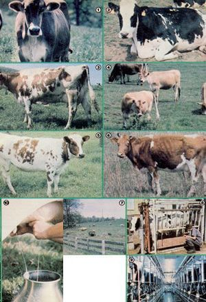

In this and the next three issues, MOTHER's animal medicine man will explore the world of homestead cattle, beginning with . . .
TEN COMMANDMENTS FOR RAISING
Just one "bossy" contentedly chewing her cud in the lower 40-or even in a small backyard plot-can easily provide your family with all the milk, cheese, and other dairy products you'll ever need. In fact, a single cow can actually overwhelm a single household with a super-abundance of delicious white liquid . . . but the problem of dealing with such excess-especially since extra milk can easily be put to good (and potentially profitable) use-is just the sort of hassle that most self-sufficient homesteaders hope to face!
What's more, milk and its by-products aren't the only goods that a dairy animal will provide. She'll raise her own calf (or calves) each year to supply your freezer with steaks and hamburgers . . . and-of course-will also add an abundance of material to the compost pile.
I. PICK THE BEST COW YOU CAN FIND
I've said it before, but I'll stress this point once again: If there's any one livestock-raising commandment that is of prime importance, it's the rule that you should always pick the very best animal you can find. When you realize that-poor producer or not-you'll have to milk (and pour feed into) a hungry hay-burner twice a day, seven days a week, for the next 10 to 15 years, it should be very evident that you want to start with a good cow.
If you haven't been around dairy cattle much, it's best to have an experienced herder (preferably not a person who's trying to sell you an animal) give you some pointers on making a good buy. As an alternative, you can also learn a good bit about cow-choosing by simply sitting ringside at a local fair or cattle show, and matching your discerning eye against that of the judge.
Naturally, the critter you select should be healthy. Look for clear and bright eyes, a shiny coat, a clean and moist muzzle, and "cowlike" feces (not firm, but also not . . . well, you've probably seen normal cow pies before) . . . and be sure that the animal has no limps, lumps, or cuts.
Remember, though, that a quality cow will look a lot different from a beef-bearing steer. A good milkmaker will appear angular, having prominent shoulder tops and hip bones. Her ribs will show, but they shouldn't stick out. She'll have a large chest area with plenty of room for lungs and heart, and her belly should look as if it could easily hold a 55-gallon drum's worth of food.
A dairy cow's "manufacturing plant"oher udder-is, as you'd imagine, the 'beast's most important asset. You should learn how to recognize a quality, high-producing udder before you even consider 'shopping for a cow. In general, the bigger:and more capacious the appendage, the better. When you look at Bossy from the rear, the bag should fill a large area between her hocks ... and, when viewed from the side, it should extend well forward in the flank region. But though the udder should be large, it shouldn't be pendulous.
Since you'll likely be the person doing the pail filling, pick an "easy milker". That is, look for a gentle animal . . . one whose teats just fit your hands (if you plan to hand-milk, and most small-scale cowherders will) and whose milk flows easily into the pail.
In other words, don't buy any cow until you've tried her. There're few more discouraging ways to start your dairy enterprise than to find that you own a cantankerous old hussy who's nearly impossible to milk without first playing rodeo . . . or whose streak canal (the passage in the teat through which the milk flows) is so small you've got to squeeze the life out of her just to get a dribble of liquid.
Almost all dairy-people maintain good records that'll show you-in black and white-which of the mommas (and which herd sires) are the best producers. Only the offspring of "prize" animals should be used to start any herd, large or small.
II. PLAN THE COWSHED WELL
Unless the weather in your area is particularly severe, neither the bovine mommas nor their babies will need elaborate shelters. Even folks in northern Wisconsin have, for years, been getting along just fine with open-ended cattle sheds. Such structures should face south to catch the sun's warming winter rays, and provide 60 square feet of bedded area per adult, and 25 to 35 square feet per calf. You'll also need to figure about a ton of bedding for each cow annually. (One ton requires 250 cubic feet of storage space.)
For most one- or two-cow operations, fenced pasture is much more economical than a small, enlosed feed-lot. Just how much pasture Bossy'll need during a growing season will depend upon the quality of the fields involved. An acre of top-of-the-line grass may be sufficient for a momma and her calf, but in sparse pastures-such as are found in western Kansas-it may take 40 to 50 acres to support one adult cow.
Most dairy animals are as docile as lambs, so they generally won't turn into fence-wreckers (unless they're in heat, during which time some of them get pretty rambunctious). Any sturdy enclosure of about 39 inches in height will keep the mooers home on your range.
III. KNOW ABOUT BREEDS
There are five major dairy cattle breeds available in North America: Guernsey, Jersey, Brown Swiss, Ayrshire, and Holstein. The following chart shows the approximate composition of each breed's milk:
There are also several breeds that are considered dual-purpose animals (milk and meatmakers). Such types include Milking Shorthorn, Devon, Dexter, and Dutch Belted.
The Jerseys and Guernseys originated in the English Channel islands between England and France. The farms on such isles were generally divided into many small fields, in which the cud-chewers were most often chained or tethered to a stake, and moved several times each day. Milkmaids visited the cows right in the fields, rather than bringing the animals in to be milked. Given such dairying methods, a small cow that gave milk with a high percentage of butterfat and of total solids proved to be more practical than a heavy milker would have been. A Guernsey or Jersey, therefore, typically produces a little less volume than do other major dairy breeds, but the milk-as the chart indicates-contains a higher average percentage of butterfat (about 5 to 5-1/2% versus 3-1/2 to 4%).
By way of contrast, the Ayrshire breed originated in Scotland, where herds often had to graze over a considerable acreage to get enough food. As a result, Ayrshires are usually large, hardy animals.
The Holstein breed, on the other hand, was developed-by the Dutch-on very fertile soil with lush grasses. With plenty of feed available to be converted to milk, Holsteins were-as a rule-large-volume producers.
In the early days of the Brown Swiss, Switzerland's farmers needed triple-purpose critters: beasts that could provide meat, milk, and draft capability. The Brown Swiss, then, is typically a large, thick-muscled animal that also gives a goodly volume of milk.
The dual-purpose breeds are the results of efforts to reach a compromise between meat and milk production, making such animals typically meatier than the other dairy critters. But-over a year's time-such cows generally won't give as much milk as will those that have no other "job".
IV. RECOGNIZE YOUR MARKET
Let's assume you've chosen a goodlooking animal that appears to be just waiting to turn her spigots on ... how much milk should you expect her to give? Well, dairy-people figure that they need to get 9,000 to 10,000 pounds of milk-per cow-in a tenmonth lactation period in order to break even . . . and you shouldn't settle for less. That works out to about 30 to 34 pounds (or about four gallons) a day, for 305 days a year. Now almost live tons of milk is a lot for most families to gulp down. (In addition, every morning there'll be a pound or so of cream that you can ladle off the top of the milk jar.)
But even if you can't find several friends to share in your white-liquid assets, the excess milk can be used as a highly nutritious diet supplement for other critters. For example, ten pounds of milk will be a bellyful for a calf. In fact, depending on how much milk the momma gives, you'll likely be able to feed two or three calves and still have enough left over for your table. What's more, the calves should be weaned when they reach 2-1/2 to 3 months of age . . . so a family could conceivably have its fill of milk and raise three batches of young animals each year, for a total of six to nine calves annually!
And where-you might ask-would the aspiring cattleperson get such extra babies? Well, it's often possible to find dairy farm owners who don't want to fool with bull calves, and will sell them at reasonable prices. (Such men and women used to give them away, but a live calf on the ground is worth $75 to $100 at today's prices.) The extra calves that you raise can then be sold as weanlings, and you can pocket the money ... or you could turn the beasts into the back 40 to become meat for your table.
Remember, too, that even if you choose not to feed "adopted" youngsters, you'll probably have one calf each year that'll eventually end up in the freezer. And don't let anyone tell you that dairy steaks aren't tasty ... they're delicious! There just aren't quite as many of them per animal as there are on beef steers. However, if you want your cow's offspring to be a little meatier, you can simply breed momma to a beef bull every year (until it's time to replace her with one of her daughters), and she'll give you a steakmaking, beef/dairycross calf whose fast growth and tasty meat may amaze you.
V. FEED YOUR COW CORRECTLY
Cows, as well as sheep and goats, are cudchewers ... critters with four-chambered (ruminant) stomachs that're perfect for digesting grasses. And if all of Bossy had to do to earn her keep was to raise a calf every year, she'd likely get along just fine on nothing more than pasture and hay. However, you'll be asking her for 10,000 pounds of milk and 400 pounds of butterfat, as well as that annual calf .. . which means you'll need to feed the old girl plenty of protein (in the form of grain and supplements) to keep her belly system running smoothly.
The key to feeding for profit and health, then, is to provide your milkmaker with what she needs, when she needs it . . . and her requirements will vary from time to time. During a typical lactation cycle, for instance, a cow will give a tremendous flow of milk for the first one to three months, after which the amount produced each day will decrease gradually until the animal finally dries up. A really good producer will have difficulty eating enough during the first few months of lactation to meet her energy needs, so be sure you don't spare the grain or hay at such times!
Later, as the animal's flow decreases, supply her with feed according to the amount of milk she gives each day. Figure about half a pound of 16% protein grain for each pound of milk the cow generates (the final mix of forage and grain should contain about 11 to 12% protein). In addition to the grain, your animal will munch from one to four pounds of forage (the amount, again, will depend on the quality of the grass) for every 100 pounds she weighs: Thus, a 1,000-pounder will need to forage or be fed 10 to 40 pounds of grass and hay a day. Never let a cow's daily grass consumption drop below 10 to 12 pounds, though, or her digestive system won't function properly and you'll end up having to treat a 1,000-pound bellyache!
Your cow will be dry (not giving any milk) during the last two months before she calves (or "freshens", as dairyfolk say). For her future health's sake, it's extremely important to keep the expectant momma svelte and supple. Don't let her become obese, but don't allow her to lose weight either. Watch her ribs . . . they should neither start to stick out obviously nor disappear under a layer of fat.
During her dry period-and on up to the final week before she's due to freshenyour animal should be on a low-calcium diet ... including such food as nonleguminous hay (prairie hay and timothy, for example), low-calcium grains (corn, wheat, milo, and oats), and a mineral mix without calcium. Once she freshens, of course, you'll want to get her on a high-calcium diet right away: Legume hays ... grains such as soybean, cottonseed, and linseed meal . . . and a mineral supplement that includes calcium will do the job.
And don't forget the liquid diet! One healthy dairy animal will need 12 to 15 gallons of fresh, clean water daily. She also must have a "free choice" salt lick that'll provide this essential ingredient at 1% of her food ration. It's best to use a salt and mineral mix during lactation, to provide calcium and other trace minerals that may be lacking in your area. (Check with your vet or county extension agent to find out which "salt supplements" are usually considered necessary in your region .. . selenium or iodine, for instance.) If she's not on green pasture or hay, your cow will also needespecially when she's expecting-vitamin A . . . so add at least 30 mg. of carotene (vitamin A precursor) to her daily ration during the last few months of her pregnancy.
Many of the dairy animal disease problems you've probably heard about-such as milk fever and pregnancy toxemiacan be prevented simply by using good cow-feeding common sense.
THERE'S MORE TO COME!
In short, a cow can be a very practical, and relatively easy to care for, addition to almost any homestead. The animals, if chosen well, are cost-effective (producing enough meat calves and milk to more than offset the expense of feed) and, in many cases, really become "part of the family". By following the simple tips above-along with the rest of my dairy cow commandments, which will appear in MOTHER NO. 71-you can take one more (large!) step toward family independence.
|
 Photos By The Author Bovine breeds: [1] Brown Swiss . . . [2] blackspotted Holstein . . . [3] brownspotted Holstein . . . [4] Jersey . . . [5] Ayrshire . . . [6] Guernsey. [7] A good milkmaker will require well-balanced, high-protein rations, as well as hay and pasture grass. [8] A sturdy metal milking stand. [9] A commercial milking parlor. [10] The backyard dairy cows ""liquid"" assets are ample payment for the small amount of care she'll require |
|
|